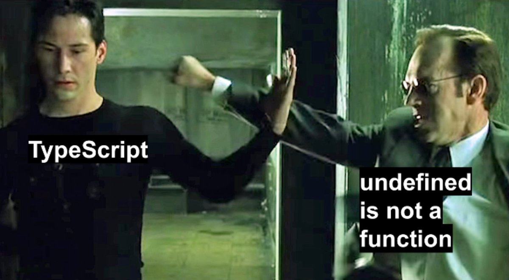

1. Static typing
function greet(person, date) {
console.log(`Hello ${person}, today is ${date}!`);
}
greet("Brendan", new Date());
1. Static typing
function greet(person: string, date: Date) {
console.log(`Hello ${person}, today is ${date}!`);
}
greet("Brendan", new Date());
1. Static typing
let message;
message();

2. Type inference
function add(left: number, right: number) {
return left + right;
}
2. Type inference
function add(left: number, right: number): number {
return left + right;
}
3. Type erasure
function greet(person: string, date: Date) {
console.log(`Hello ${person}, today is ${date}!`);
}
greet("Brendan", new Date());
3. Type erasure
"use strict";
function greet(person, date) {
console.log(`Hello ${person}, today is ${date}!`);
}
greet("Brendan", new Date());
4. Types of TypeScript

5. Union Types / Type Aliases
function printId(id: number | string) {
if (typeof id === "string") {
console.log(id.toUpperCase());
} else {
console.log(id);
}
}
5. Union Types / Type Aliases
type Point = {
x: number;
y: number;
};
function printCoord(pt: Point) {
console.log("The x value is " + pt.x);
console.log("The y value is " + pt.y);
}
printCoord({ x: 100, y: 100 });
6. Interfaces
// define `Person` interface
interface Person {
firstName: string;
lastName: string;
age: number;
getSalary: (base: number) => number;
};
// define an object of type `Person`
let ross: Person = {
firstName: 'Ross',
lastName: 'Geller',
age: 32,
getSalary: ( base: number ) => base * 12
};
// function that returns info of a `Person` object
let getPersonInfo = ( person: Person ): string => {
return `Hello, ${ person.firstName } ${ person.lastName}`;
};
// get person information
console.log( getPersonInfo( ross ) ):
7. Enums
enum PrintMedia {
Newspaper = "NEWSPAPER",
Newsletter = "NEWSLETTER",
Magazine = "MAGAZINE",
Book = "BOOK"
}
// Access String Enum
PrintMedia.Newspaper; //returns NEWSPAPER